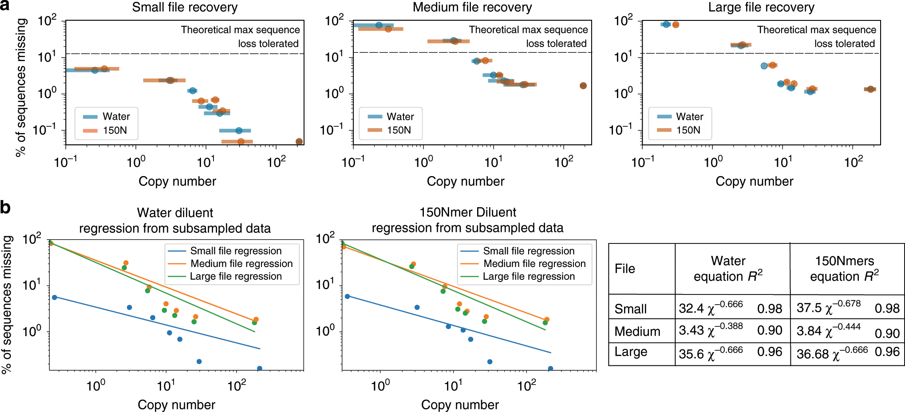
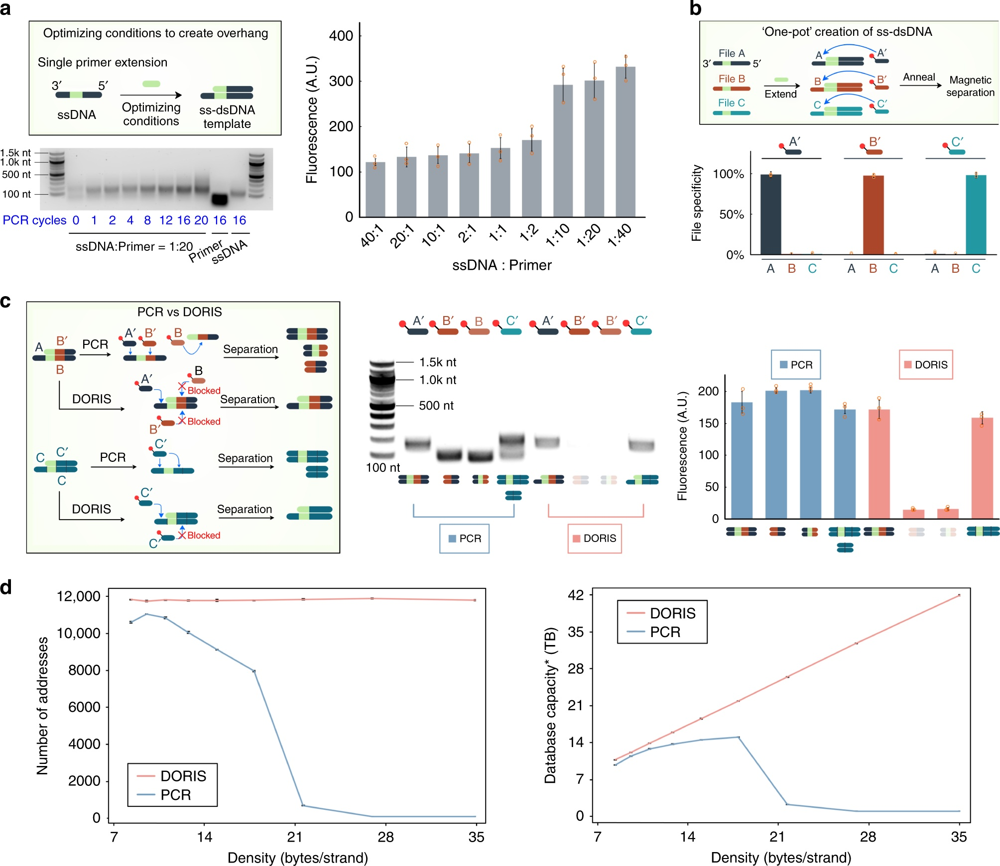
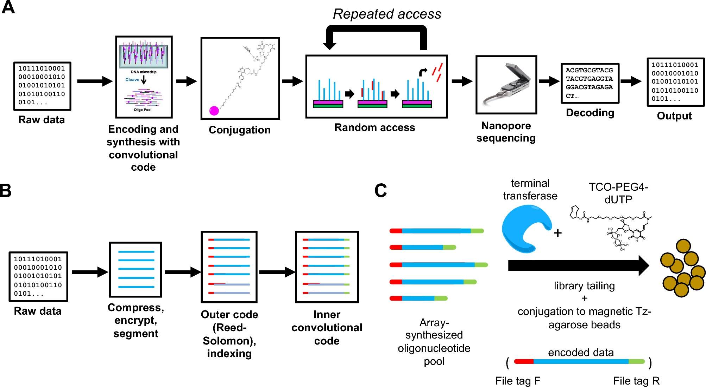
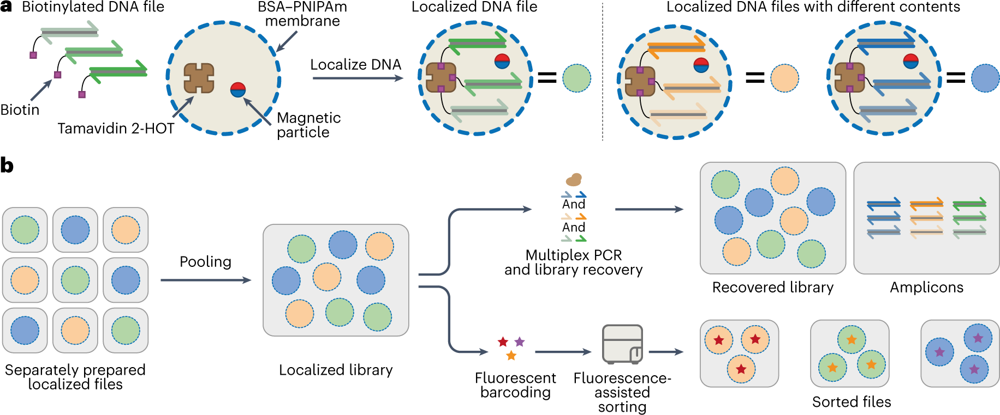
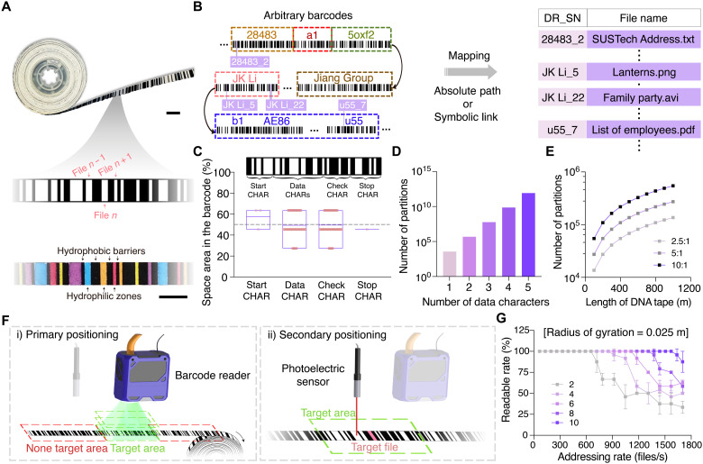
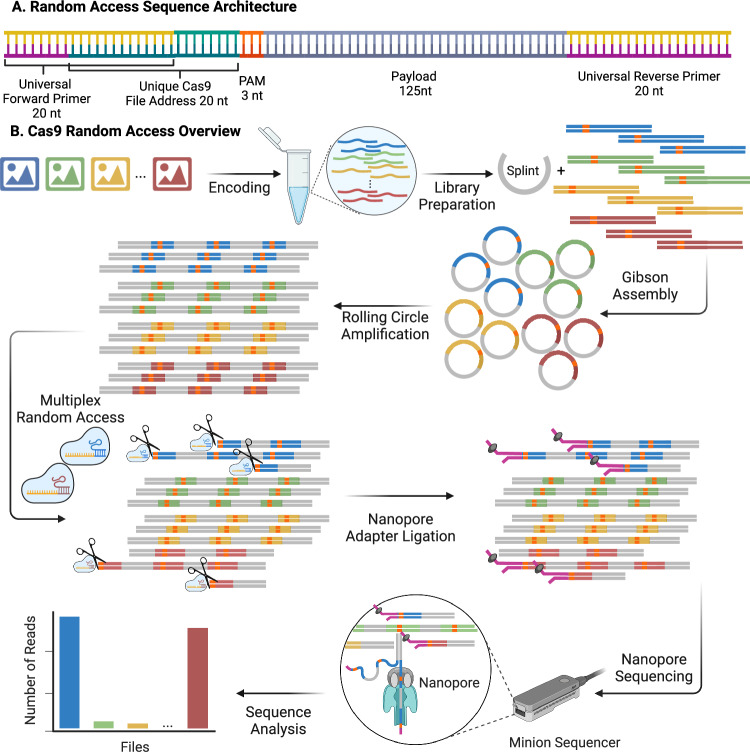

Random Access in DNA Data Storage
DNA 파일의 선택과 Random Access 방법
파일 주소와 선택적 PCR / 분자 표본화와 복원 한계 / 원본 재사용과 구획화 / 입자 검색과 공간 주소
송영준 Youngjun Song / 인천대학교 / 75분
DNA 파일 접근의 물리적 과정
| 선택 기준 | 실험에서의 주소 |
|---|---|
| 염기 서열 | 프라이머·overhang·Cas9 target |
| 입자 특성 | 형광 표지·반사 파장·크기 |
| 공간 위치 | well·표면 점·테이프 구역 |
| 판독 중 신호 | nanopore tag의 전류 특징 |
- 파일 이름과 분자 주소의 대응
- 표적 분자의 농축 또는 물리적 분리
- 선택한 DNA의 시퀀싱
- 가닥 조립·오류정정 후 파일 복원
https://doi.org/10.1038/nbt.4079 ; https://doi.org/10.1038/s41467-020-16797-2 ; https://doi.org/10.1126/sciadv.adw2613 ; https://doi.org/10.1126/sciadv.ady3406
Random Access와 가닥 index
| 영역 | 공통으로 갖는 분자 | 사용 시점 |
|---|---|---|
| 파일 주소 | 같은 파일의 여러 가닥 | 시퀀싱 전 선택 |
| 가닥 index | 파일 안의 특정 조각 | 판독 후 조립 |
| 시료 barcode | 같은 sequencing library | run의 분류 |
- File address(파일 주소): 읽을 파일을 선택
- Strand index(가닥 index): 파일 내부 순서의 복원
- Sample barcode(시료 표지): 한 run의 시료 구별
- 각 기능에 필요한 서열 길이의 배분
선택 읽기와 재기록의 초기 연구
Yazdi et al., Scientific Reports (2015)
| 기능 | 필요한 설계 |
|---|---|
| 선택 읽기 | 표적 블록의 고유 주소 |
| 주소 특이성 | 다른 주소·payload와의 교차 결합 억제 |
| 부분 수정 | 선택 블록의 편집과 재조립 |
| 검증 | 선택·수정한 내용의 판독 |
- Yazdi 등의 2015년 연구
- 주소가 붙은 블록별 선택
- 대학 6곳의 문서를 DNA로 기록
- 선택한 3곳의 문서 일부를 접근·수정
200 MB 규모의 PCR 기반 파일 접근
Organick et al., Nature Biotechnology (2018)
| 규모의 종류 | 보고한 값 |
|---|---|
| 파일 수 | 35 |
| 데이터량 | 200 MB 이상 |
| 합성 서열 수 | 1,300만 개 이상 |
| 선택·검증 | 파일별 접근 후 원본 복원 |
- 35개 파일, 200 MB 이상의 데이터
- 1,300만 개 이상의 DNA oligo
- 파일별 프라이머로 개별 접근
- 선택한 파일의 오류 없는 복원
선택적 PCR의 반응 과정

- Denaturation(변성): 두 가닥의 분리
- Annealing(어닐링): 주소 프라이머의 결합
- Extension(신장): 표적 구간의 복제
- 반복에 따른 표적 분자의 상대 비율 증가
- 주형 가닥 분리
- 주소 프라이머 결합
- 표적 구간 복제
- 증폭 산물의 판독
https://doi.org/10.1038/nbt.4079 ; https://www.genome.gov/about-genomics/fact-sheets/Polymerase-Chain-Reaction-Fact-Sheet
증폭 효율과 표적 농축
- 초기 표적량 N0와 사이클 효율 E
- 단순 모형: N=N0(1+E)^c
- 표적과 비표적의 효율 차이
- Primer dimer·교차 결합·증폭 편향
N(c) = N₀(1 + E)^c
확인·실습 문제
표적을 늘리는 PCR 선택과 비표적을 제거하는 물리적 분리의 차이 설명
적은 사본 수에서의 파일 복원 실험

물 희석과 복잡한 DNA 배경에서의 희석. 입력 사본 수와 배경 풀 복잡도의 독립적 조절.
평균 10 copies 조건의 실험 결과

입력 사본 수와 sequencing coverage의 구분. 실험한 파일과 부호에서의 복원 결과.
무작위 분주와 Poisson 표본화

- λ: 분주액에 포함되는 서열별 평균 사본 수
- 한 서열이 빠질 확률: exp(−λ)
- λ=1: 약 36.8%
- λ=10: 약 0.00454%
P(N=0) = exp(−λ)
서열별 소실과 파일 전체의 소실
| 교육용 계산 | 값 |
|---|---|
| 서열별 미포함 확률 | exp(−10)≈0.0000454 |
| 미포함 서열 수의 기댓값 | 10,000×exp(−10)≈0.454 |
| 하나 이상 미포함 | 1−(1−exp(−10))^10,000≈0.365 |
| 파일 복원 | 허용 dropout과 부호에 따라 결정 |
- 가상 파일: 서로 다른 서열 10,000종
- 균일한 평균 사본 수 λ=10 가정
- 예상 미포함 서열 수: 약 0.454종
- 하나 이상 빠질 확률: 약 36.5%
확인·실습 문제
서열별 소실 확률과 파일 복원 실패율의 차이 설명
분자 수와 sequencing depth
| 조작 | 주로 바꾸는 것 |
|---|---|
| 분주량 증가 | 입력 분자 사본 수 |
| PCR 조건 조절 | 증폭량·서열별 편향 |
| 시퀀싱 양 증가 | 기록한 read 수 |
| 원본 고정·회수 | 다음 접근에 남는 원본 |
- 분자 표본화: 어떤 서열이 포함되는가
- 증폭 편향: 포함된 서열이 얼마나 늘어나는가
- Sequencing depth: 산물을 몇 번 읽는가
- 복원 평가: 서열 coverage의 분포와 dropout
DORIS의 분리·전사·원본 반환
Overhang 주소와 payload의 분리
Lin et al. (2020), Fig. 2

- 주소: 노출된 single-stranded overhang
- Payload: 이중가닥 영역에 배치
- 상온 포획과 PCR의 고온 가닥 분리 비교
- 주소·payload 내부 결합에 대한 특이성 평가
반복 접근 뒤에 남는 원본 DNA
Lin et al. (2020), Fig. 3b–c 부분 확대
- 선택 파일 A와 비선택 파일 B·C 비교
- RNA polymerase 유무에 따른 시료 회수
- 같은 파일에 대한 5회 반복 접근
- 5회 뒤 파일 A의 약 50% 잔존
MDRAM의 자성 비드 고정 DNA

원본 DNA의 비드 고정, 표적 PCR, 복제 산물의 nanopore 판독.
동일 비드에서의 순차적 파일 접근
Lau et al. (2023), Fig. 2D 부분 확대
- 같은 MDRAM batch의 순차적 접근
- 각 실험에서 다른 파일을 PCR로 선택
- 열 지도: read가 정렬된 파일의 분율
- 대각선 농축과 비표적 read의 비교
조합 주소의 구성과 검증
Lau et al. (2023), Fig. 4A 부분 확대
- 6개 주소 위치, 위치별 8종 barcode
- 가능한 조합 수: 8⁶=262,144
- 선택한 조합의 조립·농축 검증
- 조합 가능 수와 실제 파일 수의 구분
온도 응답성 미세캡슐의 구획화

캡슐 내부 원본 고정, 온도에 따른 막 투과성, 병렬 PCR과 캡슐 재사용.
구획화 PCR의 반복 접근 결과
Bögels et al. (2023), Fig. 5D 부분 확대
- 비교: bulk, emulsion, proteinosome PCR
- 반복 접근 후 서열별 dropout 평가
- 해당 실험의 평균 dropout: 36.10%와 0.91%
- 증폭 편향과 재사용 가능한 구획의 관계
실리카 캡슐의 내용 기반 주소
Banal et al., Nature Materials (2021); 사진: MIT News

- 내부: 이미지 파일을 담은 DNA plasmid
- 표면: 내용의 특징을 나타내는 DNA barcode
- 상보적인 형광 probe의 결합
- Fluorescence-activated sorting으로 분리
- 표면 태그와 probe 결합
- 형광 sorting
- 선택 캡슐의 보호층 제거
- 내부 DNA 판독
https://doi.org/10.1038/s41563-021-01021-3 ; https://news.mit.edu/2021/dna-data-storage-0610
Boolean query와 형광 분류
Banal et al. (2021)
| 교육용 query | 선택 조건 |
|---|---|
| A AND B | A 양성, B 양성 |
| A OR B | A 또는 B 양성 |
| A AND NOT B | A 양성, B 음성 |
- AND: 두 표지 조건을 동시에 만족
- OR: 어느 한 표지 조건을 만족
- NOT: 해당 표지 조건을 제외
- 입자 내부 파일의 판독으로 검색 결과 확인
확인·실습 문제
animal, cat 태그를 이용하여 동물 중 고양이를 제외하는 Boolean query 작성
광결정 입자의 세공과 구조색
Liu et al., Science Advances (2025), Fig. 2C–H 부분 확대
- Bottlebrush block copolymer의 다공성 입자
- 연결된 세공에 DNA 흡착
- 세공 구조에 따른 반사 파장 변화
- 구조색을 이용한 파일 주소
반사 파장과 입자 크기의 2차원 주소
Liu et al. (2025), Fig. 4B 부분 확대
- 8개 반사 파장과 4개 입자 크기
- 실험의 주소 조합: 8×4=32
- Microscope–spectrometer로 표적 식별
- 입자별로 분리한 파일의 선택
광학 선택 후 DNA 방출과 파일 회수
DNA 테이프의 2단계 공간 주소

Barcode 기반 1차 위치 결정과 표적 구역의 2차 정렬.
DNA 테이프 장치와 시료 처리
Li et al. (2025), Fig. 6A–C 부분 확대
- 기계부: 테이프 이송과 위치 제어
- 광학부: barcode reader·위치 센서
- 화학부: 보호층 제거·회수·재봉입
- 관리부: 파일 주소와 실험 동작의 연결
- 표적 위치로 이동
- 보호층 제거
- DNA 회수·원본 회복
- 재봉입 또는 교체
선택적 절단에 의한 파일 접근

주소 선택 절단, adapter ligation과 nanopore 판독. 라이브러리 준비와 접근 단계의 구분.
분자 접근과 시퀀싱 중 선택
| 방법 | 선택 단계 | 주요 제어 |
|---|---|---|
| PCR | 판독 전 | 표적 사본 증가 |
| 입자·bead 분리 | 판독 전 | 물리적 분리 |
| Cas9 접근 | 판독 준비 | 절단·adapter 연결 |
| Adaptive sampling | 판독 중 | 신호 분류·전압 제어 |
- Cas9 연구: 25개 파일, 약 160만 DNA 서열
- Adaptive sampling: 초기 tag 신호의 분류
- SUSTag-ORCtrL 연구: 96·384종 tag 분류
- 선택 시점: 판독 전 처리 또는 판독 중 제어
https://doi.org/10.1038/s41467-025-61264-5 ; https://doi.org/10.1038/s41467-025-64293-2
Random Access 방법의 비교
| 방법 | 주소 | 얻는 것 |
|---|---|---|
| PCR | 프라이머 서열 | 표적 amplicon |
| DORIS | ssDNA overhang | RNA·cDNA |
| MDRAM | 원본의 primer 주소 | 복제 DNA |
| 캡슐·광결정 | Tag·색·크기 | 선택 입자 |
| 테이프 | 물리적 위치 | 선택 구역의 DNA |
| Cas9·adaptive | Target·전류 tag | 선택 library·read |
- 주소의 종류와 원본의 위치
- 한 번의 접근에 필요한 처리
- 반복 읽기에서의 손실과 편향
- 검증 단위: 분자·서열·파일
확인·실습 문제
반복 읽기가 필요한 1,000개 파일의 주소, 원본 위치, 회수 과정과 파일 검증 방법 설계
https://doi.org/10.1038/nbt.4079 ; https://doi.org/10.1038/s41467-020-16797-2 ; https://doi.org/10.1038/s41598-023-29575-z ; https://doi.org/10.1126/sciadv.adw2613 ; https://doi.org/10.1126/sciadv.ady3406 ; https://doi.org/10.1038/s41467-025-61264-5